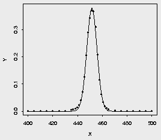
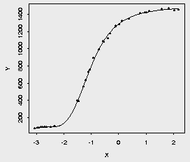
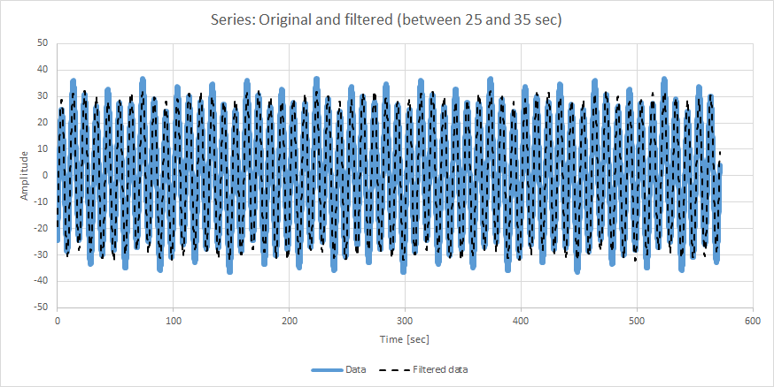
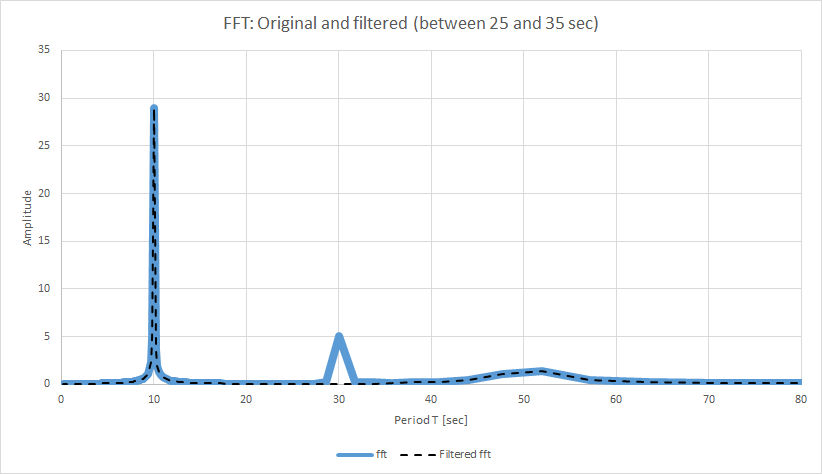

Eigen
Eigen 3 is a C++ template library for linear algebra, matrices, vectors, numerical solvers and related algorithms.
Eigen is very easy to use. For example, to multiply two matrices:
Matrix2d a, b;
a << 1, 2, // Fill the data
3, 4;
b << 5, 6,
7, 8;
Matrix2d res = a*b; // Just multiply them using *
Starting from the 3.1.1 version, it is licensed under the MPL2, which is a simple weak copyleft license. Common questions about the MPL2 are answered in the official MPL2 FAQ.
Eigen package is a wrapper of Eigen library version 5.0.0 (09/10/2025). It includes the library and helper functions to integrate better Eigen with U++, like:
Non linear equations solving
MultiDimMatrix
MultiDimMatrixRowMajor
MultiDimMatrixIndex
MultiDimMatrixRowMajor
Anboto/Eigen package includes a sample package (Eigen_demo) to ease its use for U++ users. It has many samples from Eigen library and nonlinear equation solving and optimization like Eckerle4 and Thurber (see the graphs). To simplify access to these features, simple functions have been added.
 
It also includes a simple FFT (Fast Fourier Transform) sample.that:
Generates a data series composed by three sinusoidal series of amplitude 2, 5 and 30, and frequencies 1/50, 1/30 and 1/10 Hz:
f(t) = 2*sin(2*PI*t/50 - PI/3) + 5*sin(2*PI*t/30 - PI/2) + 30*sin(2*PI*t/10 - PI/5)
Gets the FFT
Filters the frequencies between 1/25 and 1/35 Hz
Gets the filtered data series
Saves both FFT and series


Eigen packages have been prepared by dolik.rce and koldo.
|
{kind=link}
{kind=link}
{kind=link}
{kind=link}